Rails add-on
Ruby LSP Rails is a Ruby LSP add-on that enhances the base Ruby LSP functionality with Rails-specific features. It provides improved code navigation, document symbols for Rails-specific elements, and runtime introspection capabilities.
It communicates with a running Rails instance to provide dynamic information about the application, enabling more accurate and context-aware language server features.
Table of Contents
- Installation
- Runtime Introspection
- Features
Installation
The Rails add-on is installed automatically.
Ruby LSP detects Rails projects and installs the Rails add-on for you.
Runtime Introspection
LSP tooling is typically based on static analysis, but ruby-lsp-rails actually communicates with your Rails app for some features.
When Ruby LSP Rails starts, it spawns a rails runner instance which runs server.rb. The add-on communicates with this process over a pipe (i.e. stdin and stdout) to fetch runtime information about the application.
When extension is stopped (e.g. by quitting the editor), the server instance is shut down.
Features
Document Symbol
Document Symbol is a way to represent the structure of a document. They are used to provide a quick overview of the document and to allow for quick navigation.
Ruby LSP already provides document symbols for Ruby files, such as classes, modules, methods, etc. But the Rails add-on provides additional document symbols for Rails specific features.
In VS Code, you can open the document symbols view by pressing Ctrl + Shift + O.
Active Record Callbacks, Validations, and Associations
Navigates between Active Record callbacks, validations, and associations using the Document Symbol feature.
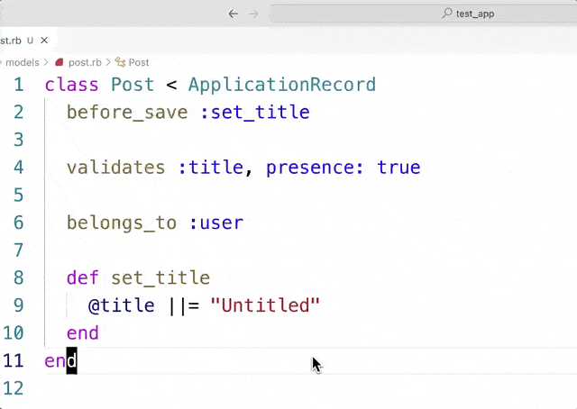
Active Support Test Cases
Navigates between Active Support test cases using the Document Symbol feature.
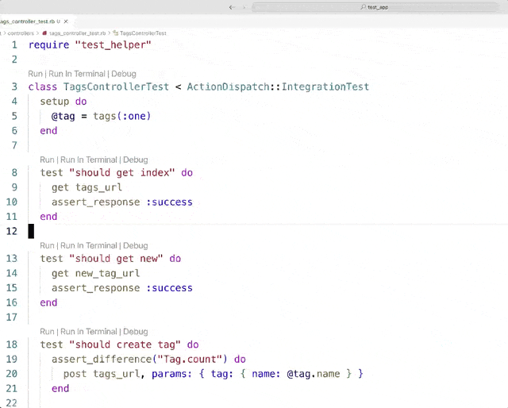
Go to Controller Action Route
Navigates to the route definition of a controller action using the Code Lens feature.
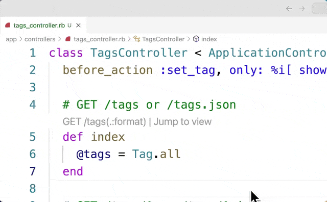
Go to Controller Action View
Navigates to the view file(s) of a controller action using the Code Lens feature.
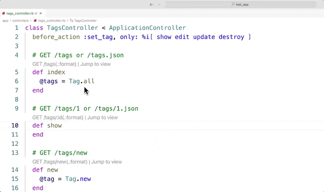
Go to Definition
Go to definition is a feature that allows you to navigate to the definition of a symbol.
In VS Code, you can trigger go to definition in 3 different ways:
- Select
Go to Definitionfrom the context menu F12on a symbolCmd + Clickon a symbol
In the following demos, we will use the Cmd + Click method to trigger go to definition.
Go to Active Record Callback and Validation Definitions
Navigates to the definitions of Active Record callbacks and validations.
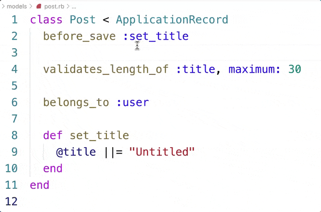
Go to Active Record Associations
Navigates to the definitions of Active Record associations.
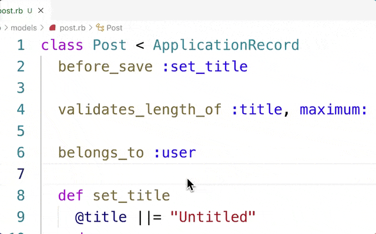
Go to Route Helper Definitions

Ruby File Operations
The Ruby LSP extension provides a Ruby file operations icon in the Explorer view that can be used to trigger the Rails generate and Rails destroy commands.
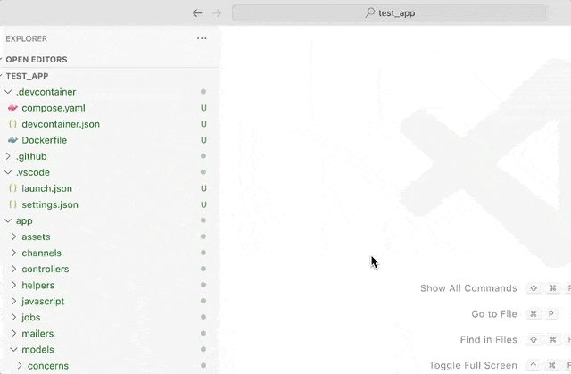
Commands
These commands are also available in the Command Palette.
Rails Generate
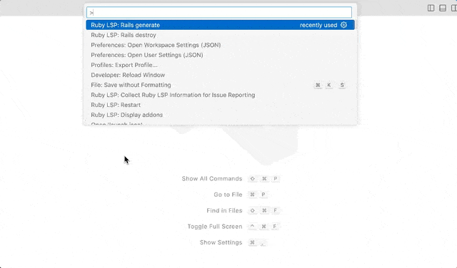
Rails Destroy
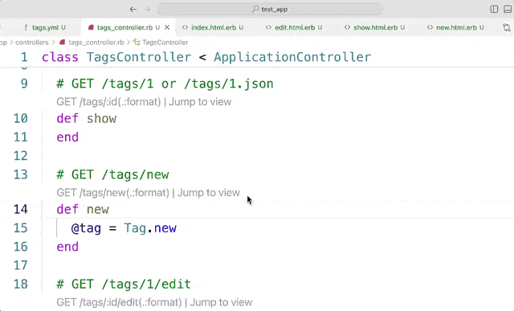
Run and Debug
The Rails add-on provides 3 ways to run and debug ActiveSupport tests using the Code Lens feature.
Run Tests With Test Explorer
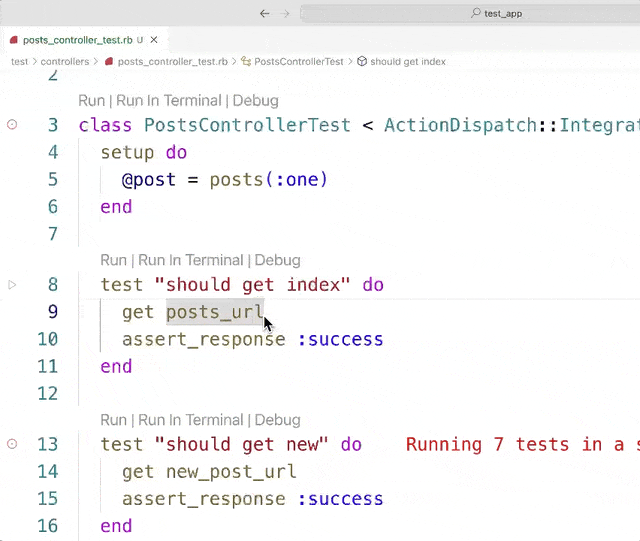
Run Tests In The Terminal
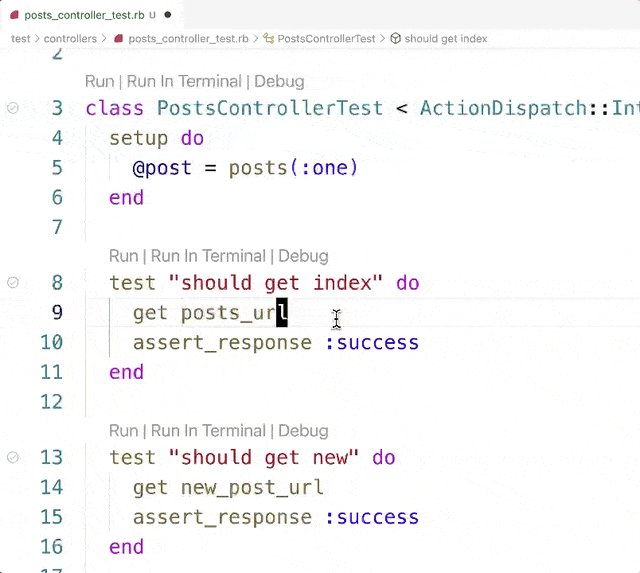
Debug Tests With VS Code
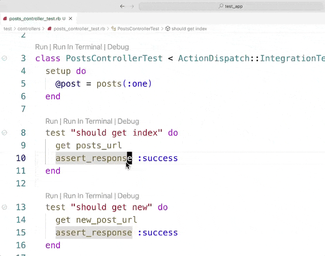